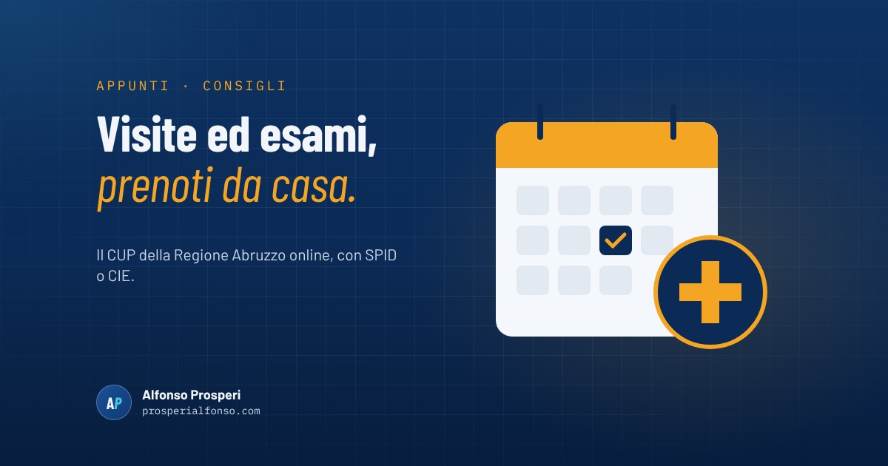

In Abruzzo si possono prenotare visite ed esami online, senza fare la fila allo sportello o restare ore al telefono. Il servizio è sul portale regionale Sanità Abruzzo online, che raccoglie anche altri servizi utili: dal cambio del medico di famiglia alla stampa della tessera sanitaria.
Cosa puoi fare online
- Prenotare visite ed esami specialistici con la ricetta del medico, nelle strutture delle quattro ASL abruzzesi.
- Scegliere o cambiare il medico di famiglia e il pediatra per i figli.
- Cercare medici e pediatri del territorio, con orari e indirizzi degli studi quando sono disponibili.
- Stampare la copia del tesserino sanitario e dell'eventuale esenzione.
- Gestire le deleghe per figli minorenni o persone che assisti.
Il portale si arricchisce nel tempo: per esempio la Regione ha reso disponibili online anche alcune immagini diagnostiche. Conviene dare un'occhiata all'elenco dei servizi ogni tanto.
Cosa serve
- Un'identità digitale: SPID oppure CIE, la carta d'identità elettronica.
- Per prenotare, la ricetta elettronica del medico: ti servono il numero della ricetta (il codice NRE) e il codice fiscale.
- Essere assistiti dal Servizio sanitario della Regione Abruzzo.
Come prenotare, passo per passo
- Apri il portale dei servizi sanitari della Regione Abruzzo e accedi con SPID o CIE.
- Scegli il servizio di prenotazione e inserisci i dati della ricetta.
- Il sistema ti propone le date disponibili nelle varie strutture: puoi scegliere quella più vicina o la prima libera.
- Conferma e salva il promemoria con data, ora, luogo ed eventuale ticket da pagare.
Attenzione alla priorità scritta sulla ricetta (U, B, D, P): indica entro quanti giorni la prestazione andrebbe garantita. Se le date proposte sono troppo lontane rispetto alla priorità, chiedi informazioni al CUP della tua ASL.
Le alternative al computer
- In farmacia: molte farmacie abruzzesi offrono il servizio di prenotazione CUP.
- Al telefono o allo sportello della tua ASL, per chi preferisce parlare con una persona.
Un consiglio
Se non puoi andare a un appuntamento, disdicilo per tempo: libera il posto per qualcun altro e in alcuni casi evita di pagare comunque il ticket. Puoi farlo dallo stesso portale o contattando il CUP.